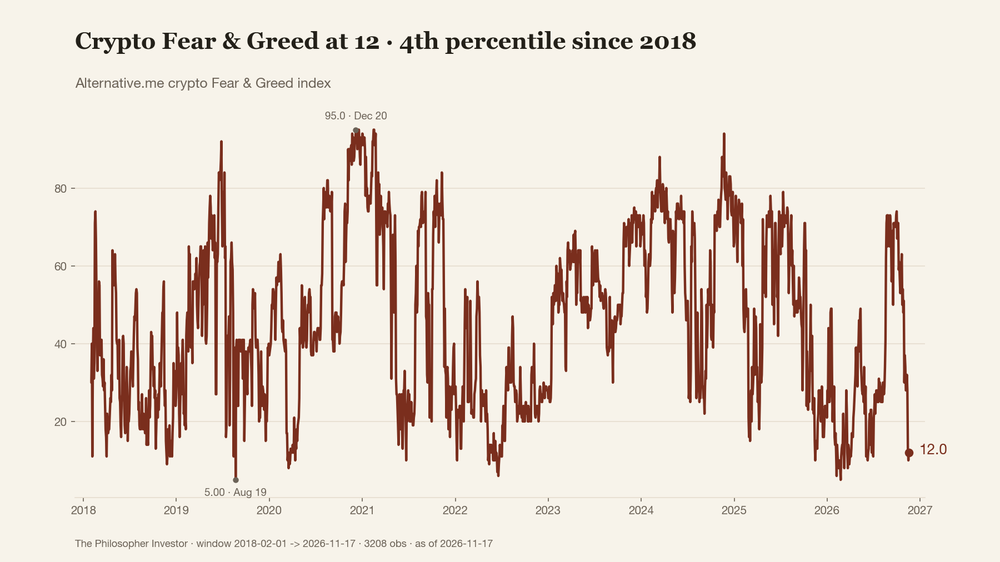
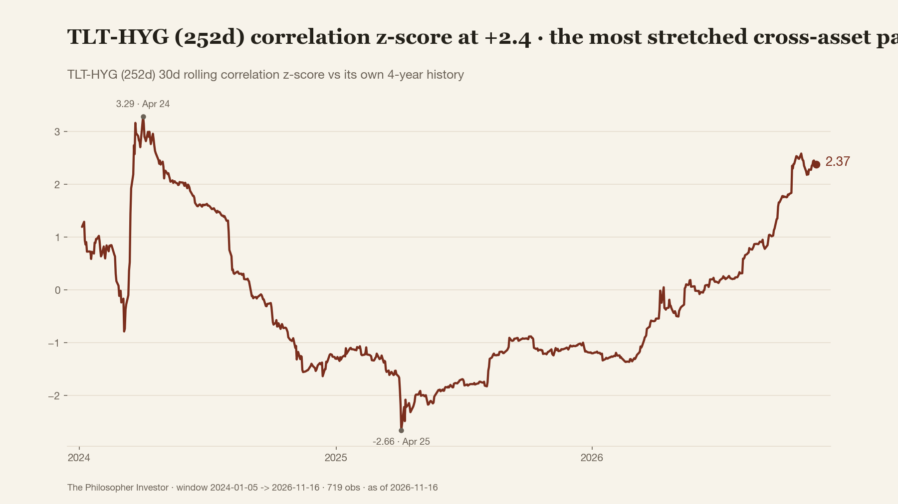
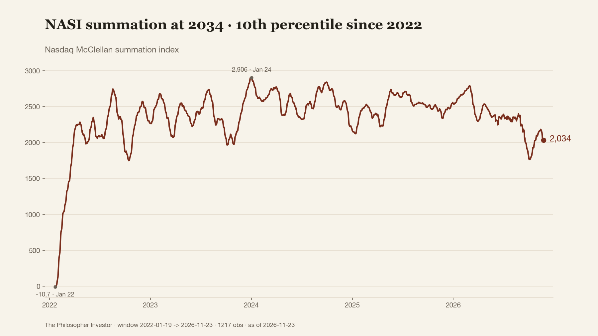
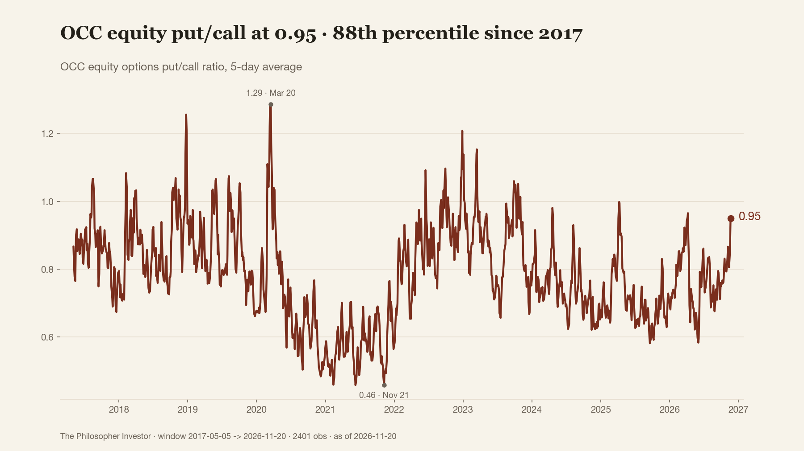

Charts of the Week
8 candidates · data through 2026-11-17
My pick: 1 + 2 + 3 + 5 + 7
3 · 49,3 % du S&P 500 a un momentum 20j au-dessus de 5 %, 95e percentile depuis 2023, alors que l'indice campe à -5,0 % du sommet du 6 octobre. Lecture descriptive.
5 · AAII bull-bear à -20,7, 8e percentile depuis 1987. Les particuliers votent baissier pendant que la participation tient. Signal DEFERRED, aucun claim d'edge.
2 · Crypto Fear & Greed à 12, 4e percentile depuis 2018. Le bout spéculatif du risque paie la facture bien plus cher que le S&P. Série non testée, description seule.
1 · Shiller CAPE à 40,0, 97e percentile depuis 1871, loin sous le record de 44,2 de décembre 1999. Contexte du prix payé, zéro timing.
7 · VVIX/VIX à 5,0, 9e percentile depuis mi-2025. Le marché de la vol facture peu de convexité sur sa propre vol. Descriptif, aucune prévision.
Dropped: 4 6 8
1 ★

2 ★

3 ★
4

5 ★

6

7 ★

8